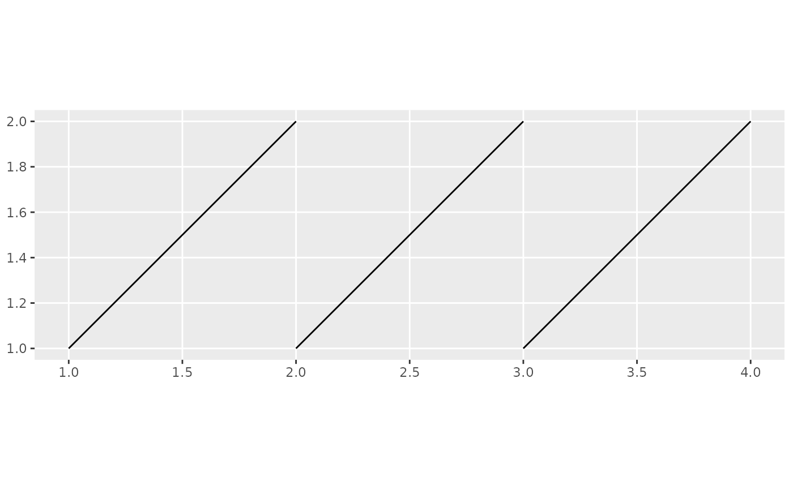

A line in 2D space is defined by a start and an and point, each associated with 2D coordinates.
This function takes a /codedata.frame as input and assumes that each row defines a line in space.
In order to do so, the data frame must have at least four columns and the start.cols and
end.cols parameters must be used to point out the names of the columns that define
the start and end coordinates of the line. The data is then converted to a
SpatialLinesDataFrame DF. If a coordinate reference system crs is provided
it is attached to DF. If also to.crs is provided, the coordinate system of DF
is transfromed accordingly. Additional columns of the input data, e.g. covariates,
are retained and attached to DF.
sline(data, start.cols, end.cols, crs = CRS(as.character(NA)), to.crs = NULL)
| data | A data.frame |
|---|---|
| start.cols | Character array poitning out the columns of |
| end.cols | Character array poitning out the columns of |
| crs | Coordinate reference system of the original |
| to.crs | Coordinate reference system for the SpatialLines ouput. |
SpatialLinesDataFrame
# \donttest{ # Create a data frame defining three lines lns <- data.frame( xs = c(1, 2, 3), ys = c(1, 1, 1), # start points xe = c(2, 3, 4), ye = c(2, 2, 2) ) # end points # Conversion to SpatialLinesDataFrame without CRS spl <- sline(lns, start.cols = c("xs", "ys"), end.cols = c("xe", "ye") ) if (require(ggplot2, quietly = TRUE)) { # Plot the lines ggplot() + gg(spl) }  # }